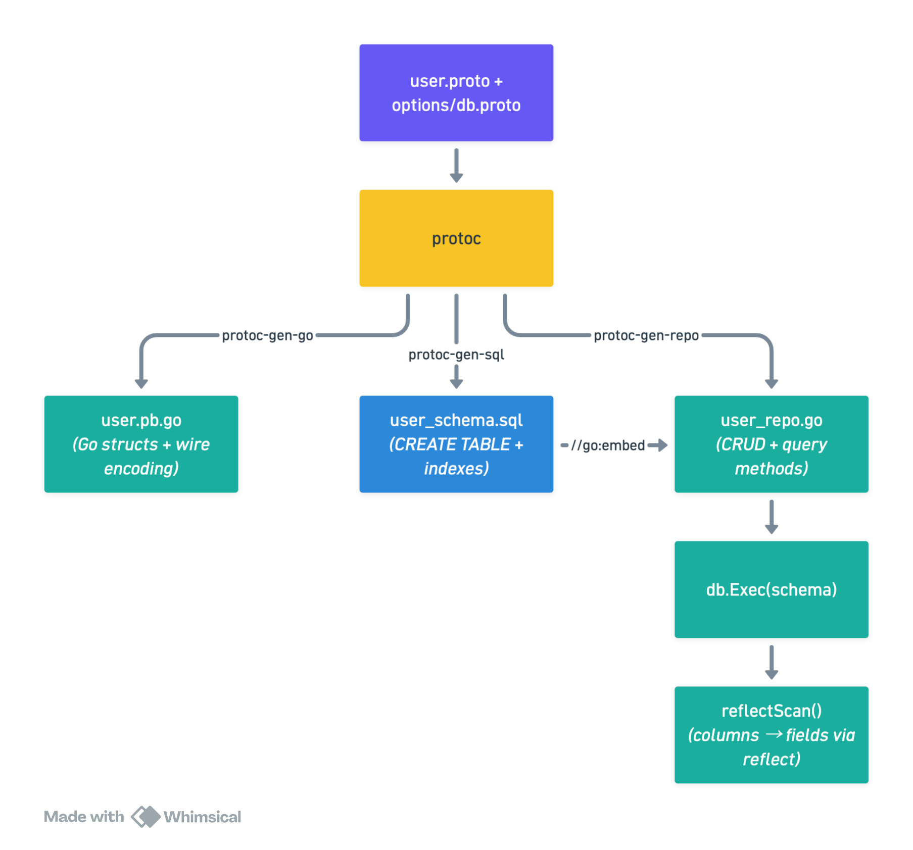

Dead Reckoning for Databases
One file. One source of truth. Write a .proto message, get a database table and type-safe Go
bindings.
The Core Idea
Every Go service that touches a database ends up maintaining the same entity in at least two places: a Protobuf message for the API layer and a SQL table for persistence. Add a Go struct in between and you have three. They drift. You forget to migrate. You fat-finger a column rename.
The fix is to make the .proto file authoritative and derive everything else from it. Concretely:
- A custom
protocplugin reads your message definition and emits aCREATE TABLEDDL file. - A reflection-based scanner maps SQLite rows back onto your proto-generated Go structs at
runtime — no hand-written
Scan(&a, &b, &c)calls.
We’re using SQLite via modernc.org/sqlite (a pure-Go driver, zero CGo) to keep the demo
self-contained. The same pattern ports cleanly to Postgres or MySQL.
The Pipeline

The runtime has no knowledge of protoc or code generation — it just sees a regular Go struct and a
*sql.DB. The generated DDL is applied once at startup via db.Exec(ddlString). reflectScan()
in the diagram refers to the sqlreflect package covered later: it uses Go’s reflect package to
map SQL column names back to struct fields automatically, so query results land in your struct
without a single hand-written rows.Scan(...) call.
Annotating Your Proto
We use custom field options to embed storage hints directly in the message. This keeps column type overrides, primary key declarations, and index hints co-located with the field they describe.
// proto/options/db.proto
syntax = "proto3";
package options;
import "google/protobuf/descriptor.proto";
option go_package = "github.com/yourorg/app/gen/options";
message DbFieldOptions {
string column_type = 1; // e.g. "TEXT", "INTEGER", "REAL"
bool primary_key = 2;
bool unique = 3;
bool not_null = 4;
string default_val = 5;
bool index = 6;
}
message DbMessageOptions {
string table_name = 1;
}
extend google.protobuf.FieldOptions { DbFieldOptions db_field = 50001; }
extend google.protobuf.MessageOptions { DbMessageOptions db_msg = 50002; }
Now the domain message. Notice how everything a DBA would want to know about storage is right here, next to the field definitions:
// proto/user/v1/user.proto
syntax = "proto3";
package user.v1;
import "proto/options/db.proto";
option go_package = "github.com/yourorg/app/gen/user/v1";
message User {
option (options.db_msg) = { table_name: "users" };
string id = 1 [(options.db_field) = {
primary_key: true
column_type: "TEXT"
not_null: true
}];
string email = 2 [(options.db_field) = {
unique: true
not_null: true
}];
string display_name = 3 [(options.db_field) = {
not_null: true
}];
int64 created_at_unix = 4 [(options.db_field) = {
column_type: "INTEGER"
not_null: true
default_val: "(unixepoch())"
}];
string org_id = 5 [(options.db_field) = {
not_null: true
index: true
}];
}
Generating DDL with a protoc Plugin
A protoc plugin is just a binary that reads a CodeGeneratorRequest from stdin and writes a
CodeGeneratorResponse to stdout. The protogen package wraps this protocol cleanly.
// cmd/protoc-gen-sql/main.go
package main
import (
"fmt"
"strings"
"google.golang.org/protobuf/compiler/protogen"
"google.golang.org/protobuf/proto"
"google.golang.org/protobuf/reflect/protoreflect"
options "github.com/yourorg/app/gen/options"
)
func main() {
protogen.Options{}.Run(func(gen *protogen.Plugin) error {
for _, f := range gen.Files {
if !f.Generate { continue }
if err := generateSQL(gen, f); err != nil {
return err
}
}
return nil
})
}
func generateSQL(gen *protogen.Plugin, f *protogen.File) error {
var out strings.Builder
for _, msg := range f.Messages {
msgOpts, _ := proto.GetExtension(
msg.Desc.Options(), options.E_DbMsg,
).(*options.DbMessageOptions)
if msgOpts == nil { continue }
table := msgOpts.GetTableName()
out.WriteString(fmt.Sprintf("CREATE TABLE IF NOT EXISTS %s (\n", table))
var indexes []string
for i, field := range msg.Fields {
fo, _ := proto.GetExtension(
field.Desc.Options(), options.E_DbField,
).(*options.DbFieldOptions)
col := toSnake(string(field.Desc.Name()))
typ := sqliteType(field.Desc.Kind(), fo)
line := fmt.Sprintf(" %s %s", col, typ)
if fo != nil {
if fo.GetPrimaryKey() { line += " PRIMARY KEY" }
if fo.GetUnique() { line += " UNIQUE" }
if fo.GetNotNull() { line += " NOT NULL" }
if d := fo.GetDefaultVal(); d != "" {
line += " DEFAULT " + d
}
if fo.GetIndex() {
indexes = append(indexes,
fmt.Sprintf("CREATE INDEX IF NOT EXISTS idx_%s_%s ON %s (%s);",
table, col, table, col))
}
}
if i < len(msg.Fields)-1 { line += "," }
out.WriteString(line + "\n")
}
out.WriteString(");\n\n")
for _, idx := range indexes {
out.WriteString(idx + "\n")
}
}
g := gen.NewGeneratedFile(f.GeneratedFilenamePrefix+"_schema.sql", "")
g.P(out.String())
return nil
}
func sqliteType(k protoreflect.Kind, fo *options.DbFieldOptions) string {
if fo != nil && fo.GetColumnType() != "" { return fo.GetColumnType() }
switch k {
case protoreflect.BoolKind,
protoreflect.Int32Kind, protoreflect.Int64Kind,
protoreflect.Sint32Kind, protoreflect.Sint64Kind:
return "INTEGER"
case protoreflect.FloatKind, protoreflect.DoubleKind:
return "REAL"
case protoreflect.BytesKind:
return "BLOB"
case protoreflect.MessageKind:
return "TEXT" // JSON-encode nested messages
default:
return "TEXT"
}
}
The plugin emits this DDL — which you apply at startup via a single db.Exec():
-- generated: proto/user/v1/user_schema.sql
CREATE TABLE IF NOT EXISTS users (
id TEXT PRIMARY KEY NOT NULL,
email TEXT UNIQUE NOT NULL,
display_name TEXT NOT NULL,
created_at_unix INTEGER NOT NULL DEFAULT (unixepoch()),
org_id TEXT NOT NULL
);
CREATE INDEX IF NOT EXISTS idx_users_org_id ON users (org_id);
Scanning Rows Back via Reflection
Here’s where it gets interesting. Instead of writing rows.Scan(&u.Id, &u.Email, ...) for every
query, we use Go’s reflect package to match column names to struct fields automatically. Because
protoc-gen-go names struct fields in PascalCase and our columns are snake_case, a simple
converter bridges the gap.
// internal/sqlreflect/scan.go
package sqlreflect
import (
"database/sql"
"fmt"
"reflect"
"strings"
"unicode"
)
// ScanRow scans a single *sql.Rows into a proto-generated struct pointer.
// dst must be a non-nil pointer to a struct.
func ScanRow[T any](row *sql.Rows, dst *T) error {
cols, err := row.Columns()
if err != nil { return err }
rv := reflect.ValueOf(dst).Elem() // dereference pointer
rt := rv.Type()
// Build col → field index map once per call
fieldByCol := make(map[string]int, rt.NumField())
for i := 0; i < rt.NumField(); i++ {
fieldByCol[toSnake(rt.Field(i).Name)] = i
}
ptrs := make([]any, len(cols))
for i, col := range cols {
if idx, ok := fieldByCol[col]; ok {
ptrs[i] = rv.Field(idx).Addr().Interface()
} else {
var discard any
ptrs[i] = &discard // unknown column — silently skip
}
}
return row.Scan(ptrs...)
}
// ScanRows collects all rows into a slice.
func ScanRows[T any](rows *sql.Rows) ([]T, error) {
var out []T
for rows.Next() {
var dst T
if err := ScanRow(rows, &dst); err != nil { return nil, err }
out = append(out, dst)
}
return out, rows.Err()
}
// toSnake converts "DisplayName" → "display_name"
func toSnake(s string) string {
var b strings.Builder
for i, r := range s {
if unicode.IsUpper(r) && i > 0 { b.WriteByte('_') }
b.WriteRune(unicode.ToLower(r))
}
return b.String()
}
Performance note: The column→field map is rebuilt on every call here for clarity. In a hot path, cache it in a
sync.Mapkeyed onreflect.TypeOf(dst). The allocation cost is negligible for most workloads.
A Zero-Boilerplate Repository
We can go one step further: generate the repository itself. A second plugin, protoc-gen-repo,
reads the same field options and emits a complete Go repository — no hand-written code at all. The
rules are simple:
primary_keyorunique→GetBy{Field}(ctx, val) (*T, error)index→ListBy{Field}(ctx, val) ([]*T, error)- Fields with a
default_valare omitted fromINSERT(the DB supplies the default)
The template lives in its own file — a plain text file where backticks in SQL strings cause no
issues. The plugin loads it at compile time with //go:embed and only concerns itself with
collecting data to pass in.
// cmd/protoc-gen-repo/repo.tmpl
package repo
import (
"context"
"database/sql"
_ "embed"
_ "modernc.org/sqlite"
{{.Pkg}} "{{.Imp}}"
scan "github.com/yourorg/app/internal/sqlreflect"
)
//go:embed {{.SchemaFile}}
var {{.Lower}}Schema string
type {{.GoType}}Repo struct{ db *sql.DB }
func New{{.GoType}}Repo(path string) (*{{.GoType}}Repo, error) {
db, err := sql.Open("sqlite", path)
if err != nil { return nil, err }
if _, err = db.Exec({{.Lower}}Schema); err != nil { return nil, err }
return &{{.GoType}}Repo{db: db}, nil
}
func (r *{{.GoType}}Repo) Create(ctx context.Context, v *{{.Pkg}}.{{.GoType}}) error {
_, err := r.db.ExecContext(ctx,
`INSERT INTO {{.Table}} ({{.InsertCols}}) VALUES ({{.Placeholders}})`,
{{.InsertVals}},
)
return err
}
{{range .Methods}}
func (r *{{.GoType}}Repo) {{.Name}}(ctx context.Context, val {{.GoKind}}) {{.Return}} {
rows, err := r.db.QueryContext(ctx,
`SELECT * FROM {{.Table}} WHERE {{.Col}} = ?`, val)
if err != nil { return nil, err }
defer rows.Close()
{{- if .IsList}}
items, err := scan.ScanRows[{{.Pkg}}.{{.GoType}}](rows)
if err != nil { return nil, err }
out := make([]*{{.Pkg}}.{{.GoType}}, len(items))
for i := range items { out[i] = &items[i] }
return out, nil
{{- else}}
if !rows.Next() { return nil, sql.ErrNoRows }
var v {{.Pkg}}.{{.GoType}}
return &v, scan.ScanRow(rows, &v)
{{- end}}
}
{{end}}
// cmd/protoc-gen-repo/main.go
package main
import (
_ "embed"
"strings"
"text/template"
"unicode"
"google.golang.org/protobuf/compiler/protogen"
"google.golang.org/protobuf/proto"
"google.golang.org/protobuf/reflect/protoreflect"
options "github.com/yourorg/app/gen/options"
)
//go:embed repo.tmpl
var repoTmplSrc string
var repoTmpl = template.Must(template.New("repo").Parse(repoTmplSrc))
type repoData struct {
Pkg, Imp, GoType, Lower, Table, SchemaFile string
InsertCols, Placeholders, InsertVals string
Methods []methodData
}
type methodData struct {
Name, GoType, Pkg, Table, Col, GoKind, Return string
IsList bool
}
func main() {
protogen.Options{}.Run(func(gen *protogen.Plugin) error {
for _, f := range gen.Files {
if !f.Generate { continue }
generateRepo(gen, f)
}
return nil
})
}
func generateRepo(gen *protogen.Plugin, f *protogen.File) {
for _, msg := range f.Messages {
msgOpts, _ := proto.GetExtension(
msg.Desc.Options(), options.E_DbMsg,
).(*options.DbMessageOptions)
if msgOpts == nil { continue }
goType := msg.GoIdent.GoName
lower := strings.ToLower(goType)
data := repoData{
Pkg: lower, Imp: string(f.GoImportPath),
GoType: goType, Lower: lower,
Table: msgOpts.GetTableName(),
SchemaFile: f.GeneratedFilenamePrefix + "_schema.sql",
}
// Collect columns for INSERT, skipping fields with a server-side default.
var cols, vals []string
for _, field := range msg.Fields {
fo, _ := proto.GetExtension(
field.Desc.Options(), options.E_DbField,
).(*options.DbFieldOptions)
if fo != nil && fo.GetDefaultVal() != "" { continue }
col := toSnake(string(field.Desc.Name()))
cols = append(cols, col)
vals = append(vals, "v."+toPascal(col))
}
data.InsertCols = strings.Join(cols, ", ")
data.Placeholders = strings.TrimSuffix(strings.Repeat("?, ", len(cols)), ", ")
data.InsertVals = strings.Join(vals, ", ")
// One query method per annotated field.
for _, field := range msg.Fields {
fo, _ := proto.GetExtension(
field.Desc.Options(), options.E_DbField,
).(*options.DbFieldOptions)
if fo == nil { continue }
col := toSnake(string(field.Desc.Name()))
goKind := kindToGoType(field.Desc.Kind())
if fo.GetPrimaryKey() || fo.GetUnique() {
data.Methods = append(data.Methods, methodData{
Name: "GetBy" + toPascal(col), GoType: goType, Pkg: lower,
Table: data.Table, Col: col, GoKind: goKind,
Return: "*" + lower + "." + goType + ", error",
})
} else if fo.GetIndex() {
data.Methods = append(data.Methods, methodData{
Name: "ListBy" + toPascal(col), GoType: goType, Pkg: lower,
Table: data.Table, Col: col, GoKind: goKind,
Return: "[]*" + lower + "." + goType + ", error",
IsList: true,
})
}
}
var buf strings.Builder
repoTmpl.Execute(&buf, data)
g := gen.NewGeneratedFile(f.GeneratedFilenamePrefix+"_repo.go", f.GoImportPath)
g.P(buf.String())
}
}
func kindToGoType(k protoreflect.Kind) string {
switch k {
case protoreflect.BoolKind: return "bool"
case protoreflect.Int32Kind, protoreflect.Sint32Kind: return "int32"
case protoreflect.Int64Kind, protoreflect.Sint64Kind: return "int64"
case protoreflect.FloatKind: return "float32"
case protoreflect.DoubleKind: return "float64"
case protoreflect.BytesKind: return "[]byte"
default: return "string"
}
}
func toPascal(s string) string {
var b strings.Builder
upper := true
for _, r := range s {
if r == '_' { upper = true; continue }
if upper { b.WriteRune(unicode.ToUpper(r)); upper = false } else { b.WriteRune(r) }
}
return b.String()
}
Running this against user.proto produces the following — the entire repository, derived purely
from the annotations already in the .proto file:
// generated: proto/user/v1/user_repo.go
package repo
import (
"context"
"database/sql"
_ "embed"
_ "modernc.org/sqlite"
userv1 "github.com/yourorg/app/gen/user/v1"
scan "github.com/yourorg/app/internal/sqlreflect"
)
//go:embed proto/user/v1/user_schema.sql
var userSchema string
type UserRepo struct{ db *sql.DB }
func NewUserRepo(path string) (*UserRepo, error) {
db, err := sql.Open("sqlite", path)
if err != nil { return nil, err }
if _, err = db.Exec(userSchema); err != nil { return nil, err }
return &UserRepo{db: db}, nil
}
func (r *UserRepo) Create(ctx context.Context, v *userv1.User) error {
_, err := r.db.ExecContext(ctx,
`INSERT INTO users (id, email, display_name, org_id) VALUES (?, ?, ?, ?)`,
v.Id, v.Email, v.DisplayName, v.OrgId,
)
return err
}
func (r *UserRepo) GetById(ctx context.Context, val string) (*userv1.User, error) {
rows, err := r.db.QueryContext(ctx,
`SELECT * FROM users WHERE id = ?`, val)
if err != nil { return nil, err }
defer rows.Close()
if !rows.Next() { return nil, sql.ErrNoRows }
var v userv1.User
return &v, scan.ScanRow(rows, &v)
}
func (r *UserRepo) GetByEmail(ctx context.Context, val string) (*userv1.User, error) {
rows, err := r.db.QueryContext(ctx,
`SELECT * FROM users WHERE email = ?`, val)
if err != nil { return nil, err }
defer rows.Close()
if !rows.Next() { return nil, sql.ErrNoRows }
var v userv1.User
return &v, scan.ScanRow(rows, &v)
}
func (r *UserRepo) ListByOrgId(ctx context.Context, val string) ([]*userv1.User, error) {
rows, err := r.db.QueryContext(ctx,
`SELECT * FROM users WHERE org_id = ?`, val)
if err != nil { return nil, err }
defer rows.Close()
items, err := scan.ScanRows[userv1.User](rows)
if err != nil { return nil, err }
out := make([]*userv1.User, len(items))
for i := range items { out[i] = &items[i] }
return out, nil
}
Wiring it all together
A single protoc invocation drives all three plugins, producing .pb.go, _schema.sql, and
_repo.go in one pass:
.PHONY: generate
generate:
protoc \
--go_out=gen --go_opt=paths=source_relative \
--sql_out=gen --sql_opt=paths=source_relative \
--repo_out=gen --repo_opt=paths=source_relative \
proto/user/v1/user.proto
A single make generate now produces all three artifacts from one .proto file.
Using the generated repository
repo, err := NewUserRepo("app.db")
if err != nil { log.Fatal(err) }
// Insert a new user.
err = repo.Create(ctx, &userv1.User{
Id: "u_123",
Email: "alice@example.com",
DisplayName: "Alice",
OrgId: "org_456",
})
// Look up by primary key.
user, err := repo.GetById(ctx, "u_123")
// Look up by unique field.
user, err = repo.GetByEmail(ctx, "alice@example.com")
// List all users in an org.
users, err := repo.ListByOrgId(ctx, "org_456")
Every method, its signature, and its SQL query were derived entirely from the annotations in
user.proto — no repository code was written by hand.
Tradeoffs
What you gain:
- One file to rule them all — add a field to the proto, re-run
make generate, done. - No ORM magic — plain SQL queries, full visibility into what hits the DB.
- Embeddable binary — schema ships inside the binary via
//go:embed. - Natural relations — when two proto messages reference each other (e.g.
UserandOrg), annotate both withdb_msgand use anindex: truefield on the foreign key. Each message gets its own table and its own generated repository; joining them is a plain SQL query rather than a nested-message blob.
Watch out for:
- Reflection cost — cache the column map for hot paths.
- Proto field numbers vs column order — proto field numbers are for wire encoding; column order
in
SELECT *is defined by DDL order. Keep them aligned or always name columns explicitly. - Schema migrations —
CREATE TABLE IF NOT EXISTSis idempotent for creation but won’t add new columns to an existing table. Use a migration tool like golang-migrate or Atlas for production schema evolution. - Complex types — nested proto messages become
TEXT(JSON-encoded). Fine for rarely-queried data; a poor fit for deeply queryable nested structures.
Beyond SQLite — Porting to Other Databases
The same proto annotation trick extends beyond SQL. Point a different plugin at your .proto file
and emit a MongoDB validator schema, a DynamoDB attribute map, or a Redis hash structure. The plugin
ecosystem is the leverage point — the proto file stays the same regardless of where the data lands.
Conclusion
The .proto file has always been the contract between services. This post extends that idea one
step further: make it the contract between your code and your database too. A custom protoc plugin
turns field annotations into DDL; a reflection-based scanner maps rows back to structs without
manual binding; a second plugin generates the entire repository from the same source. The result is
a system where adding a field, an index, or a new query method is a single edit in one file followed
by make generate — no drift, no duplication, no boilerplate.
Disclaimer: My postings are my own and don’t necessarily represent Stripe’s positions, strategies or opinions.